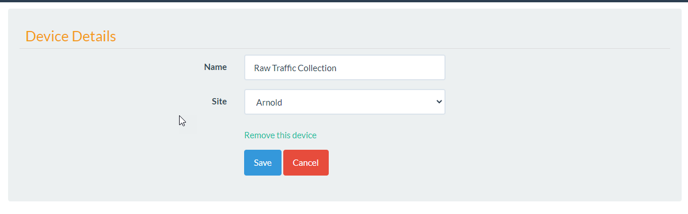

Devices¶
Introduction¶
Devices are used to collect Traffic and Alarm data. Devices are assigned to Sites and can hold 1 or more connections.
Each connection has 4 different collection methods that are covered in the Connection section.
Adding A Devices¶
To add a device click Admin/Devices and select the New Device button.
Fill out the Name and the Site.
Continue to Connections to configure the different connection types.